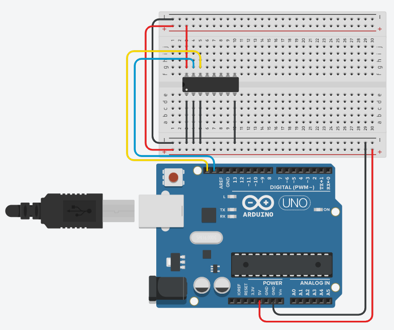
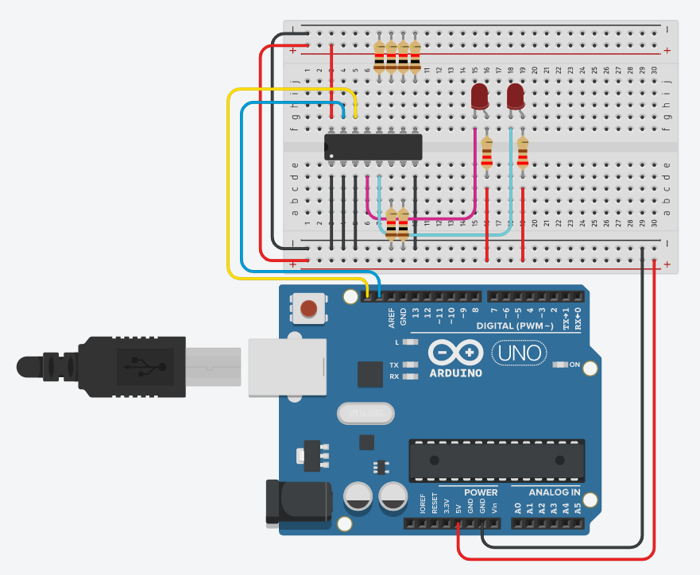

Bouw je eerste I²C-schakeling: een PCF8574 I/O-expander aan de bus, met twee leds eraan die om de seconde afwisselend branden. Onderweg zoek je op welk adres jouw chip heeft.
Tot nu toe hing elke led en elke knop aan een eigen pin van de Arduino. In dit labo werk je met een I/O-expander: een chip die je met twee draden aan de Arduino hangt en die er acht in- of uitgangen bij levert. Hoe die bus werkt, wat SDA en SCL zijn en hoe de chip aan zijn adres komt, staat op Werken met de PCF8574. Je gebruikt hier ook je eerste bibliotheek, en hoe dat werkt lees je op Bibliotheken gebruiken. Lees die twee pagina's door voor je begint te bouwen.
Maak eerst de basisschakeling, met enkel de PCF8574AN aangesloten op de Arduino.

Laad het programma in de Arduino dat je op de pagina Het I²C adres vinden kan terugvinden en noteer het adres dat gevonden werd. Dat ga je in elke oefening van dit labo nodig hebben.
Om het basisadres te vinden zetten we A0 tot A2 allemaal laag. De PCF8574AN heeft dan adres 0x38. Hang je later een van die lijnen aan Vcc, dan verandert het adres mee. Zie Werken met de PCF8574.
Gebruik de twee pinnen met het opschrift SDA en SCL naast de AREF-pin. Die staan op een UNO en op een Leonardo op dezelfde plaats. Op een UNO zijn dat dezelfde lijnen als A4 en A5, op een Leonardo pin 2 en pin 3. Zie de I²C bus.

Dezelfde schakeling als hierboven, met twee leds op P0 en P1 erbij. A0, A1 en A2 blijven aan GND, dus je chip houdt het adres dat je net gevonden hebt.
Een uitgang van de PCF8574 kan maar ongeveer 4 mA leveren, te weinig om een led goed te doen branden. Opnemen kan hij wel veel meer. Daarom hangen de leds met hun weerstand aan de plus, en niet aan de massa. Een 0 op de uitgang doet de led branden, een 1 laat ze gedoofd.
Blijft de vraag wat je doet met P2 tot P7, die je hier niet gebruikt. Je mag ze open laten hangen, en dat is wat deze oefening doet. Je mag ze ook aan GND leggen, zoals verderop in dit labo bij de volloper gebeurt, maar dan moet zo'n pin in elk bitpatroon dat je uitstuurt laag blijven. Stuur je er een 1 naartoe, dan probeert de uitgang een pin hoog te trekken die vastligt aan de massa. Een weerstand tussen de pin en GND vangt dat op.
Hoe je een ongebruikte pin bedraadt, bepaalt dus welke waarde je die bit moet geven. Open laten hangen is het veiligst zolang je nog aan het uitproberen bent, want dan kan geen enkel patroon kwaad.
Je stuurt telkens één byte naar de chip, en die byte bevat de toestand van alle acht de pinnen tegelijk. Je kan dus niet één led apart aansturen, want je schrijft altijd het hele patroon. Hoe je zo'n patroon opbouwt en leest, staat op Werken met bits.
Het meest rechtse bit van je byte is P0, het meest linkse is P7. Wil je enkel de led op P0 laten branden, dan moet enkel dat bit 0 zijn en de rest 1. Dat is dus B11111110.
Voor de led op P1 schuift die nul één plaats op: B11111101.
Schrijven naar de chip gaat in drie stappen: Wire.beginTransmission(), Wire.write() en Wire.endTransmission(). Die staan uitgelegd op Werken met de PCF8574.
Sla je oefening op.
Overloop volgende checklist om je oefening zelf te evalueren:
De twee bitpatronen staan als constante bovenaan, met een naam die zegt wat ze doen. Dat leest een stuk beter dan twee kale hexwaarden midden in de loop().
De drie Wire-instructies zitten samen in schrijfExpander(). Je gebruikt ze in elke oefening van dit labo opnieuw, dus het loont om ze één keer te schrijven.
#include <Wire.h>
const int adresExpander = 0x38; // PCF8574AN met A0, A1 en A2 aan GND
// De LEDs hangen actief laag aan P0 en P1: een 0 laat de LED branden.
// De vrije pinnen laten we hoog, dan blijft er nergens stroom lopen.
const byte led1Aan = B11111110; // alleen P0 laag
const byte led2Aan = B11111101; // alleen P1 laag
void schrijfExpander(byte waarde)
{
Wire.beginTransmission(adresExpander);
Wire.write(waarde);
Wire.endTransmission();
}
void setup()
{
Wire.begin();
}
void loop()
{
schrijfExpander(led1Aan);
delay(1000);
schrijfExpander(led2Aan);
delay(1000);
}